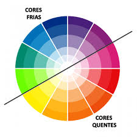

Entenda como combinar cores
O círculo cromático ajuda você a fazer combinações harmônicas de cores, seja por cores complementares, análogas ou por tríades.
Cores por estação:
- Primavera: Amarelo, Verde-claro
- Verão: Azul, Coral
- Outono: Vermelho, Marrom
- Inverno: Cinza, Preto